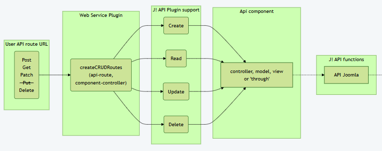
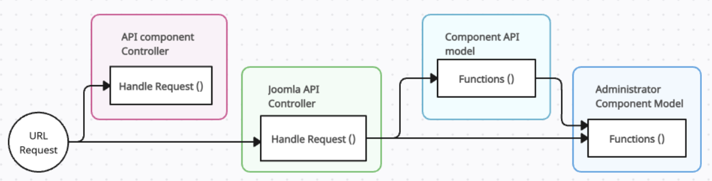
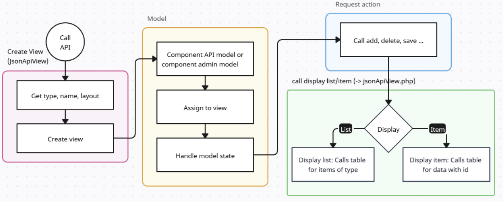
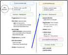

## Behind the scenes ### What is going on behind the scenes ? 
**Reminder:** We have defined the component's API router interface as follows: ```php $router->createCRUDRoutes( 'v1/secondhand/books', 'books', $defaults ); ``` * The first parameter `v1/secondhand/books` tells the route which can be <br> used in the call to the web page. 'v1' is used as the version, <br> 'secondhand' is the component and 'books' is the table. <br> * The second parameter `books` is the controller file to be used. * The last `getDefaults` is the internal config parameter which defines <br> the actual component and how 'public' the API is reachable. <br> <br> The $defaults variable contains a config array and looks like <br> ```php $defaults = ['component' => 'com_secondhand', 'public' => false]; $defaults = ['component' => 'com_secondhand', 'public' => true]; ``` If **'public' => true** is set, no X-Token is checked and everyone can<br> access this entry. This should only be set for tests
## Function createCRUDRoutes The joomla createCRUDRoutes function organizes it as following: ```php public function createCRUDRoutes($baseName, $controller, $defaults = [], $publicGets = false) { $getDefaults = array_merge(['public' => $publicGets], $defaults); $routes = [ new Route(['GET'], $baseName, $controller . '.displayList', [], $getDefaults), new Route(['GET'], $baseName . '/:id', $controller . '.displayItem', ['id'=>'(\d+)'], $getDefaults), new Route(['POST'], $baseName, $controller . '.add', [], $defaults), new Route(['PATCH'], $baseName . '/:id', $controller . '.edit', ['id' => '(\d+)'], $defaults), new Route(['DELETE'], $baseName . '/:id', $controller . '.delete', ['id' => '(\d+)'], $defaults), ]; $this->addRoutes($routes); } ``` The new Route function is given the command, the route ($baseName) <br> and the config ($defaults). The last parameter for the 'createCRUDRoutes' <br> function is a second entry for the public flag and is merged into the default config. This could also have been written like following in the web service extension: ```php new Route(['GET'], 'v1/secondhand/books', 'books.displayList', [], $defaults), new Route(['GET'], 'v1/secondhand/books/:id', 'books.displayItem', ['id' => '(\d+)'], $defaults), new Route(['POST'], 'v1/secondhand/books', 'books.add', [], $defaults), new Route(['PATCH'], 'v1/secondhand/books/:id', 'books.edit', ['id' => '(\d+)'], $defaults), new Route(['DELETE'], 'v1/secondhand/books/:id', 'books.delete', ['id' => '(\d+)'], $defaults), ``` The Route is starting with 'Command', path "v1/..." and then <br> the controller.function. In the $default parameter the <br> component name and the 'public' variables are expected.
## Route endpoint parameter <span style="text-align: left;"> Examples:<br> - 'v1/secondhand/books/**2**'<br> - 'v1/secondhand/books/**The hobbit**'<br> ```php new Route(['GET'], 'v1/secondhand/books/:id', 'books.displayItem', ['id' => '(\d+)'], $defaults), new Route(['GET'], 'v1/secondhand/books/:title', 'books.displayItem', ['title'=>'([A-Z0-9 ]+'], $defaults), ``` A colon ':' indicator followed by 'name' will be part of the URL input and<br> can be fetched accordingly. The value is restricted/secured by by given <br> regular expression. The JSON parameters given in the request can be fetched by ```php $srcFilename = $this->input->json->getString('id'); ``` or all at once ```php $data = json_decode($this->input->json->getRaw(), true); ``` There may be more than one parameter (Not tested ToDo: try it with code :-( ) ```php new Route(['GET'], 'v1/secondhand/categories/:catId/images/:id', 'books.displayItem', ['catId' => '(\d+)', 'id' => '(\d+)'], $defaults), ``` </span>
## Internal routes created by createCRUDRoutes The following graph shows the path of possible API route inside <br> the joomla code. The **webservice plugin** of the component calls <br> the J! API function **createCRUDRoutes** and gives it the base <br> route definition and the component controller base. <p></p>
## Addressing the controller function The middle part of the route definition tells about the 'controller.function' call: ```php `new Route(['GET'], 'v1/secondhand/books', 'books.displayList', [], $getDefaults)` ``` Here `'books.displayList'` tells the controller name is 'books' and <br> the function to be called is "displayList". This is the entry point in <br> the API part of the component. The code above will lead to <br> file BooksController.php. Any combination which leads to a valid php <br> file class and function may be used. <br> Example: `'myControllerClass.someFunction'` The controller can leave the handling of model <br> and view to the joomla API functions or define its own.
# Code workflows <br> ## URL request to used model <p></p> The API call to the controller function like 'displayList' will use the code in the component api controller path if available. Otherwise, the default API controller steps in and handles the request. In similar way the joomla api controller calls the model creator which tries to find the component api model or takes the component administrator model with given name.
## joomla api controller sequence <p></p>
## ??? ??? Minimum display list: controller to view <p></p>
## empty ```php ```
## empty ```php ```
## empty ```php ```
## empty Still the component API part may contain its own <br> controller, model and display functions ? image ? ? example ? ToDo: fill out, create image ... or delete ;-)
## empty last